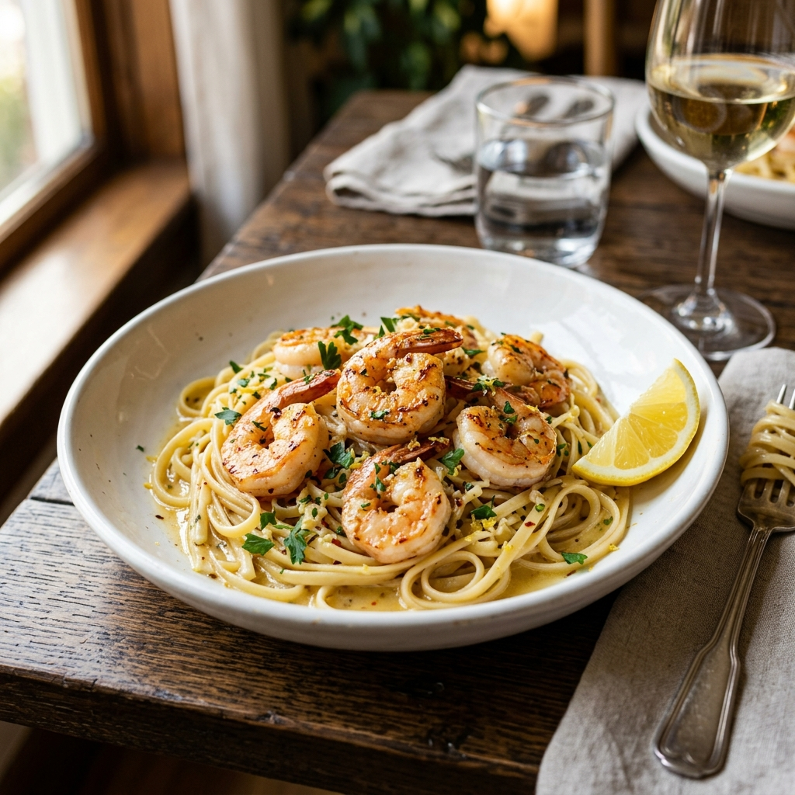

Description
Plump shrimp sautéed in a garlicky white wine butter sauce, tossed with linguine. An elegant dish that comes together in under 30 minutes — impressive enough for guests, easy enough for a weeknight.
Ingredients
- 400g linguine
- 500g large shrimp, peeled and deveined
- 4 tbsp butter
- 2 tbsp olive oil
- 6 cloves garlic, minced
- 1/2 cup dry white wine
- 1/4 tsp red pepper flakes
- Juice of 1 lemon
- 1/4 cup fresh parsley, chopped
- Salt and black pepper to taste
- Grated Parmesan, to serve
Instructions
- Cook linguine in a large pot of salted boiling water until al dente. Reserve 1/2 cup pasta water, then drain.
- Pat shrimp dry and season with salt and pepper.
- Heat olive oil and 2 tbsp butter in a large skillet over medium-high heat. Add shrimp and cook 1–2 minutes per side until pink. Remove and set aside.
- Reduce heat to medium. Add remaining butter and the garlic; cook for 1 minute until fragrant.
- Add red pepper flakes and white wine, and let it simmer for 3–4 minutes until reduced by half.
- Add lemon juice and the reserved pasta water. Stir to combine.
- Add linguine and shrimp back to the pan. Toss to coat in the sauce.
- Garnish with parsley and Parmesan and serve immediately.